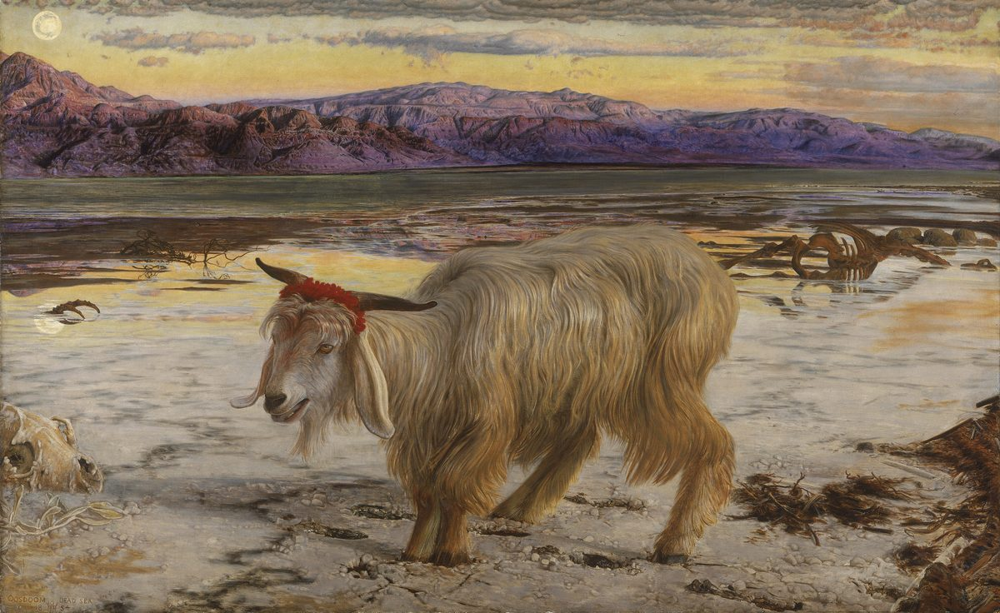

Psalm 63 — The Mister Translation

Psalm 63. Hunt painted this on the shore of the Dead Sea, in the country east of the wilderness of Judah, and its subject is the goat of the Day of Atonement, not David. What it shares with the psalm is the ground: a salt flat, dry and bright, with bones lying in it, a land “of dryness and weariness, without water”.

Translator's Notes — verse by verse
⭐ The heading counts as a verse. As at Psalm 8, the Hebrew counts the heading as verse 1, so the first line of the prayer is verse 2 here, and the English versions on the shelf, which print the heading unnumbered, are one number behind from verse 2 on: where this page has verse 12, they have 11. The verse numbers on this page are the Hebrew ones.
⭐ “In the wilderness of Judah”. “When he was in the wilderness of Judah” stands in one verse of the Hebrew Bible, this one, and midbar yehudah, “the wilderness of Judah”, is named in one other verse, Judges 1:16 (now on these pages). The heading gives no event, and the book gives David more than one time in the wilderness: the pursuit by Saul, at Ziph and at En-gedi (1 Samuel 23:14 and 24:1, now on these pages), and the flight from Absalom, when he crossed toward the wilderness (2 Samuel 15:23, now on these pages). The shelf headings do not agree on the occasion: the TLB has “when he was hiding in the wilderness of Judea”, the Geneva “in the desert of Ziph”, the Douay “when he was in the desert of Edom” and the NWT 1984 “when he happened to be in the wilderness of Judah”.
⭐ “I seek you at the dawn”. Ashacharekha is from shachar, the dawn: to seek early, to seek at first light. The verb in this form stands in two verses, here and Isaiah 26:9 (now on these pages), “my soul longs for you in the night, my spirit within me seeks you”. The KJV has “early will I seek thee”, the ASV “earnestly will I seek thee”, the NIV “earnestly I seek you”, the NWT 1984 “I keep looking for you”, the TLB “How I search for you!” and the Douay “to thee do I watch at break of day”.
⭐ Soul and flesh. “My soul thirsts for you, my flesh pines for you”: “thirsts for you, my soul” stands in this one verse, with the soul as the thirsty part (dictionary), and then “pines for you”, kamah lekha, stands in this one verse, said of the basar, the flesh. The KJV has “my flesh longeth for thee”, the NWT 1984 “my flesh has grown faint [with longing]” and the Douay “for thee my flesh, O how many ways!”.
⭐ A land of dryness and weariness. “Dryness and weariness” stands in this one verse, with tsiyah, dry ground, in a phrase that, as “a land of dryness”, stands in nine verses, and ayef, weary. The last words are “without water”, which stands in two verses once the hits are read, here and Job 8:11. David’s own wilderness has the same three words, “hungry and weary and thirsty in the wilderness” (2 Samuel 17:29, now on these pages; “weary and thirsty” stands in that one verse). The KJV has “in a dry and thirsty land, where no water is”, the ASV “In a dry and weary land, where no water is”, the NIV “in a dry and parched land where there is no water”, the NWT 1984 “In a land dry and exhausted, where there is no water” and the TLB “in this parched and weary land where there is no water”.
⭐ “So, in the sanctuary”. Ken baqodesh chazitikha: “so in the sanctuary I have beheld you” stands in this one verse. The verb is chazah, to see in a vision, to gaze, and what is seen is uzzekha ukhevodekha, “your might and your glory” (which stands in this one verse; dictionary). The KJV has “so as I have seen thee in the sanctuary”, the ASV “So have I looked upon thee in the sanctuary”, the NIV “I have seen you in the sanctuary and beheld your power and your glory”, the NWT 1984 “Thus I have beheld you in the holy place” and the Geneva “Thus I behold thee as in the Sanctuary”. The TLB makes it a wish, “How I wish I could go into your sanctuary to see your strength and glory”, and the Douay has “so in the sanctuary have I come before thee”.
⭐ “Better than life”. “Your steadfast love is better than life” stands in this one verse, and “for your steadfast love is good”, with chesed (dictionary), stands in three verses: this one, Psalm 69:17 and Psalm 109:21. The Hebrew word for life is plural, chayyim, which is how the language says life, and the Douay keeps the plural, “better than lives”. The KJV has “thy lovingkindness is better than life”, the NIV “your love is better than life”, the NWT 1984 “your loving-kindness is better than life”, the Geneva “thy loving-kindness is better than life”, the Douay “thy mercy is better than lives” and the TLB “your love and kindness are better to me than life itself”.
⭐ Lifting the palms. “In your name I will lift my palms”: “I will lift my palms” stands in two verses, this one and Psalm 119:48 (now on these pages). The KJV has “I will lift up my hands in thy name”, the NWT 1984 “In your name I shall raise my palms”, the NIV “in your name I will lift up my hands” and the TLB “lifting up my hands to you in prayer”.
⭐ Fat and richness. “As with fat and richness” stands in this one verse: chelev, the fat that was Jehovah’s share of the offering, and deshen, the rich part; the same picture of being filled is God’s invitation, “let your soul delight itself in fatness” (Isaiah 55:2, now on these pages). The KJV has “as with marrow and fatness”, the NIV “as with the richest of foods”, the NWT 1984 “As with the best part, even fatness” and the Douay “as with marrow and fatness”. The word rananot, “songs of joy” in “lips of songs” stands in this one verse. The KJV has “with joyful lips”, the NWT 1984 “with lips of joyful cries” and the NIV “with singing lips”.
⭐ On my bed, in the watches. “On my bed” stands in this one verse, and “in the watches” stands in this one verse, ashmurot, the night guard-shifts (dictionary), the same watch that is “in the night” in Psalm 90:4 (now on these pages). The verb is ehgeh, “I murmur”, a low sound in the throat, from hagah (dictionary), and “I murmur of you” stands in this one verse. The KJV has “meditate on thee in the night watches”, the NIV “I think of you through the watches of the night”, the NWT 1984 “During the night watches I meditate on you”, the Douay “I will meditate on thee in the morning” and the TLB “I lie awake at night thinking of you”.
⭐ The shadow of your wings. “In the shadow of your wings” stands in four verses: Psalm 17:8, 36:8, 57:2 and this one, none of the others translated here yet. The KJV has “in the shadow of thy wings will I rejoice”, the NIV “I sing in the shadow of your wings”, the NWT 1984 “in the shadow of your wings I cry out joyfully”, the Geneva “under the shadow of thy wings will I rejoice” and the Douay “I will rejoice under the covert of thy wings”.
⭐ Clinging, and held. “My soul clings after you” stands in this one verse, with davaq, the verb of Eden, “a man will leave his father and his mother and cling to his wife” (Genesis 2:24, now on these pages), and the answer is “your right hand has taken hold, which stands in this one verse”: the soul clings, the hand holds. The KJV has “My soul followeth hard after thee: thy right hand upholdeth me”, the NIV “I cling to you; your right hand upholds me”, the NWT 1984 “My soul has closely followed you; On me your right hand keeps fast hold”, the Geneva “My soul cleaveth unto thee” and the Douay “My soul hath stuck close to thee”.
⭐ Seeking my soul for ruin. “For ruin they seek my soul” stands in this one verse, and the end of their road is “the lower parts of the earth”, which in this form stands in this one verse. The KJV has “those that seek my soul, to destroy it, shall go into the lower parts of the earth”, the NIV “Those who want to kill me will be destroyed; they will go down to the depths of the earth”, the NWT 1984 “They will come into the lowest parts of the earth”, the Geneva “they shall go into the lowest parts of the earth” and the TLB “shall go down to the depths of hell”.
⭐ Poured out by the sword, and foxes. “They will be poured out by the hands of the sword” stands in this one verse, with nagar, to pour, to flow, the verb for what is given over (Jeremiah 18:21, now on these pages, has its relative, “and give them over to the hands of the sword”). “A portion for foxes” stands in this one verse; the shu’alim are foxes or jackals, the same word as the foxes of Song of Solomon 2:15. The KJV has “They shall fall by the sword: they shall be a portion for foxes”, the ASV “They shall be given over to the power of the sword”, the NIV “become food for jackals”, the NWT 1984 “They will be delivered over to the power of the sword” and the TLB “to become the food of jackals”.
⭐ The king. The last verse turns to a king: “will rejoice in God” stands in this one verse, “everyone who swears by him” stands in this one verse, and the liars are silenced, “the mouth will be stopped”, in this one verse. The heading puts David in the wilderness and the verse calls someone “the king”; the psalm does not say whether it is the same man after a rescue, or a king speaking of himself in the third person. The KJV has “But the king shall rejoice in God”, the NIV “But the king will rejoice in God”, the NWT 1984 “And the king himself will rejoice in God”, the TLB “But I will rejoice in God” and the Douay “But the king shall rejoice in God”. For the end, the KJV has “the mouth of them that speak lies shall be stopped”, the NIV “the mouths of liars will be silenced”, the NWT 1984 “the mouth of those speaking falsehood will be stopped up” and the TLB “liars shall be silenced”.
Patterns worth carrying forward
Where this translation keeps the words exact and distinct: “steadfast love” for chesed; “I seek you at the dawn” for ashacharekha; “soul” for nefesh and “flesh” for basar; “the sanctuary” for qodesh; “palms” for kappayim; “I murmur” for ehgeh; “the watches” for ashmurot; “God” for Elohim, and the name Jehovah does not occur in this psalm. The Hebrew has no written and read pairs in this psalm.
Echoes paid. Judges 1:16, the other wilderness of Judah; Isaiah 41:18 and Jeremiah 2:6, the other dry lands; Isaiah 26:9, the other soul that seeks at night; the wilderness of David in 1 Samuel 23–24 and 2 Samuel 15, 17; the lifting of palms in Psalm 119:48; the fat of Isaiah 55:2; the watches of Psalm 90:4; the clinging of Genesis 2:24; and the sword of Jeremiah 18:21.
Echoes planted. The other “steadfast love is good” verses (Psalm 69:17, 109:21); the other shadows of wings (Psalm 17:8, 36:8, 57:2); the foxes of Song of Solomon 2:15; and the other dry lands of Hosea 2:5 and Joel 2:20. None of these is translated here yet.
⚠ A note on order: the Psalms stand on these pages at 1, 8, 19, 22, 23, 24, 27, 34, 37, 46, 51, 56, 63, 90, 91, 100, 103, 118, 119, 121, 130, 139 and 150, chosen by how often they are read rather than in sequence. The sequential thread is unchanged: next in sequence is Psalm 2.